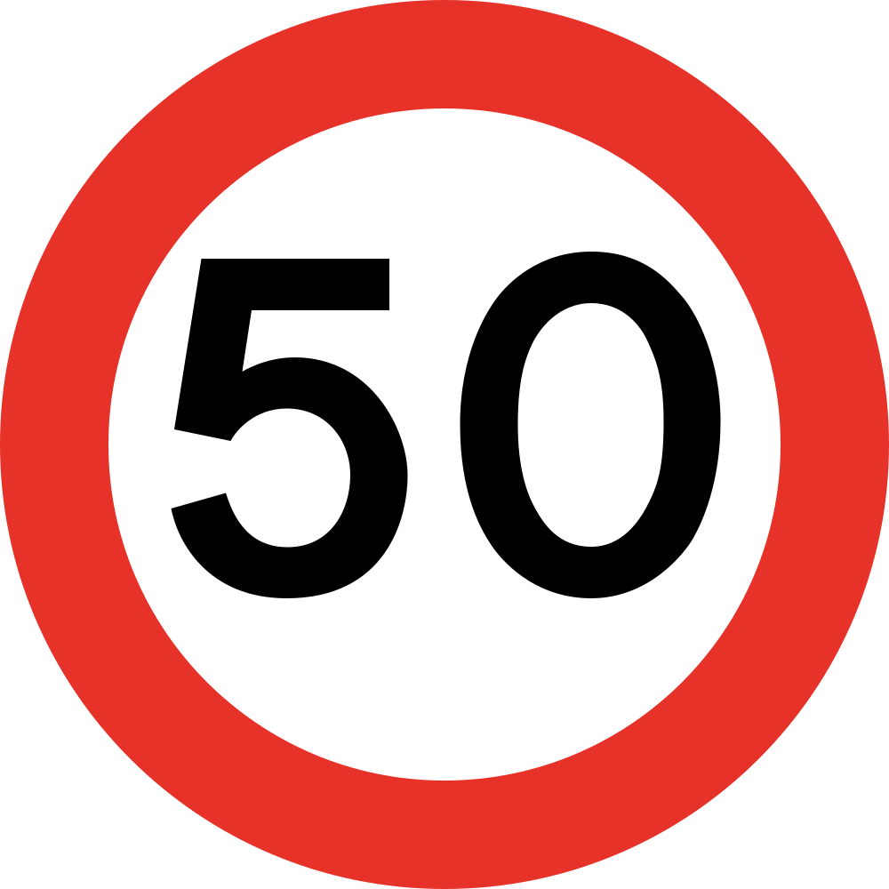
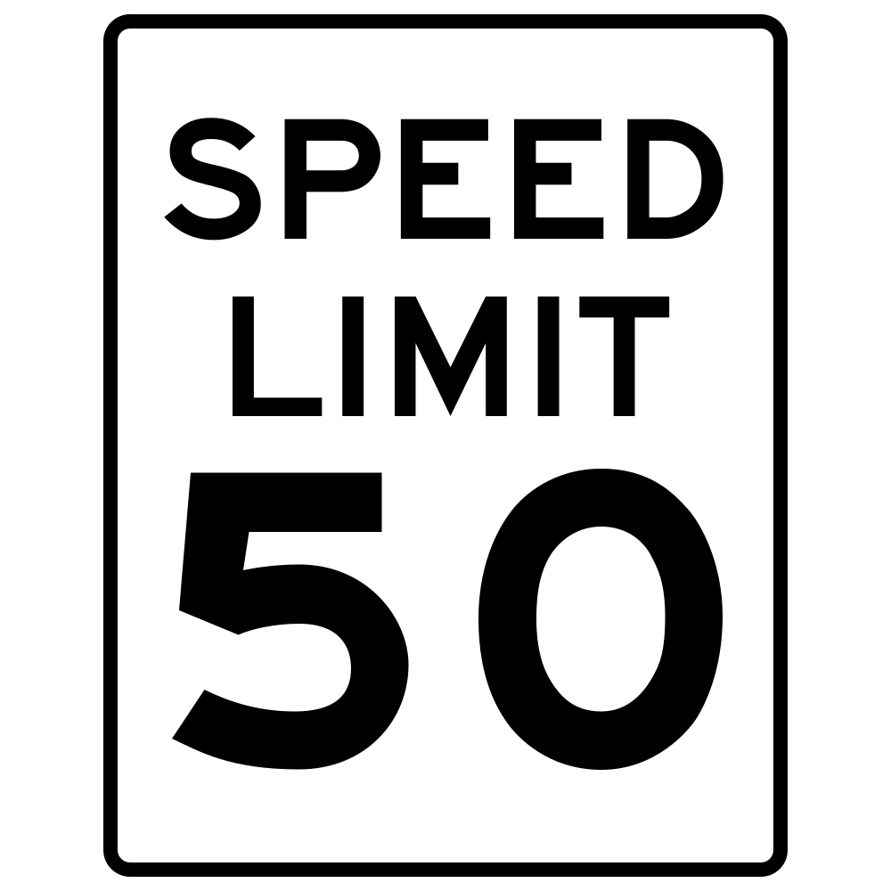
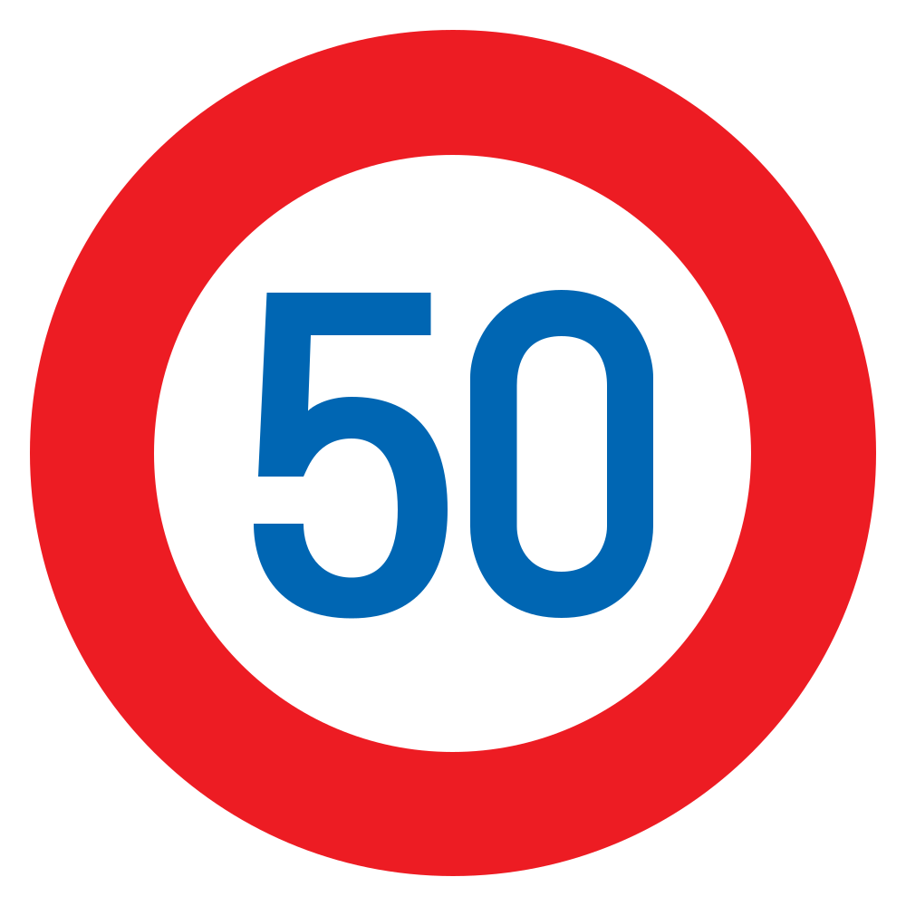
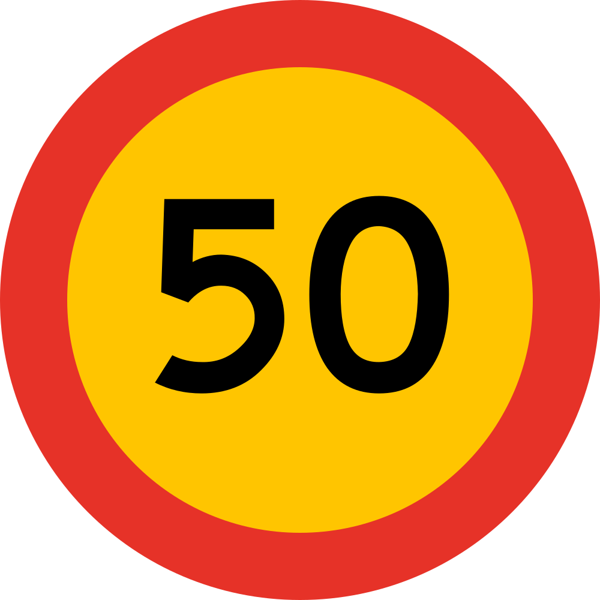

Speed limit
History
In 1896, Walter Arnold of Kent became what is believed to be the first person convicted of speeding, at 8 mph. In 1904, the United Kingdom set out one of the first standard speed limit signs, a white ring above a plate showing the number. The 1968 Vienna Convention on Road Signs and Signals specifies the number inside a red ring.
Adoption
A number in a red ring is widely adopted around the world, in both kilometers and miles per hour. A few exceptions exist, like the US rectangle and roads like Germany's Autobahn, much of which has no permanent limit.
Sources

UK


